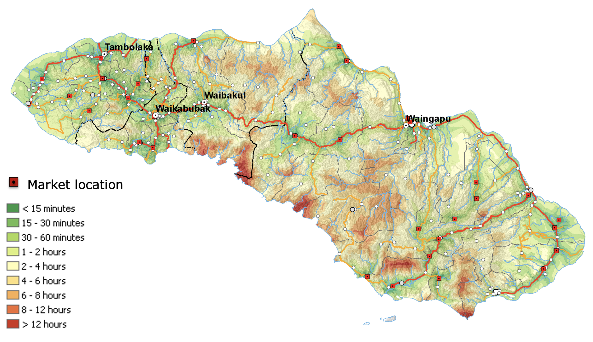
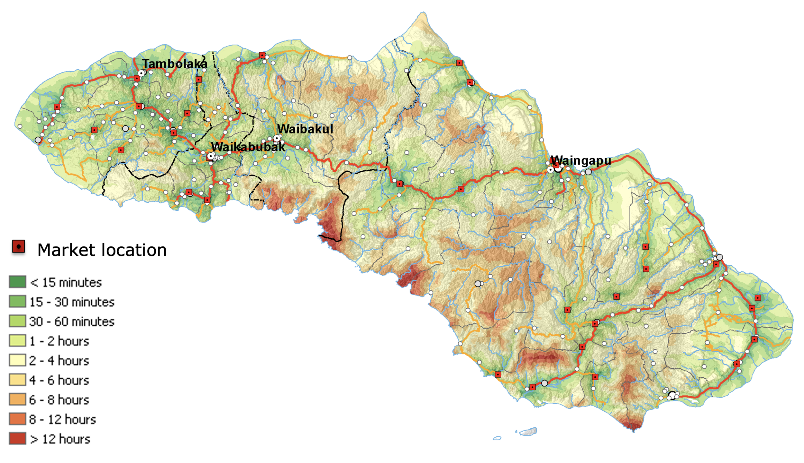

OSM use case: accessibility mapping
OpenStreetMap (OSM) is a collaborative project to create a free, editable map of the world. The core of OSM is a collection of map data which can be used for many different purposes. You can get a first idea browsing the world map on the main page of OSM. While browsing, try the Layers button on the right to view different map formats. It illustrates how OSM’s data can be used in diverse manners.
I will explain on how OSM data can be applied in the humanitarian context to support WFP’s program activities in the field.
Market access in Sumba Island, Indonesia
DEFINITION AND RELEVANCE FOR FOOD SECURITY
The term “accessibility” refers to the distance to a location of interest and ease with which each destination is reached (Goodall, 1987).
Accessibility in terms of ease of physical access to markets and social infrastructure has an impact in terms of food security and poverty of (rural) populations. Access to markets can contribute to the diversification of household economies by exposing them to channels for the sale of their labour or products. Well-functioning markets go a long way to insulate households from shocks to crop production such as those from droughts or floods. Good access to health and educational resources is an essential condition for development and the increasing in standards of living.
Hence the interest in the modelling and quantification of accessibility for institutions involved in humanitarian assistance is high. Maps of travel time to some target location (market, administrative capital) can flag isolated areas more prone to chronic poverty and food insecurity. From them you can derive the catchment area of target locations, i.e. areas where populations are closer to a given target than to any other: Catchment areas of markets can highlight the reach of particular markets or enable you to characterize the population served by a given market in terms of its wealth, food security or livelihood. You can also broadly characterize a country by mapping propotions of the population that are more than a certain travel time away from a given amenity (such as health centres, water points, education resources).
Beyond these operational applications, being able to model travel time and catchment area of markets (or health centres or any other location of interest) offers the possibility to integrate accessibility data into household surveys as additional explanatory variables.
This publication adapts an existing GIS model of accessibility, and implements it as a self study training guidebook to a study of market access in Sumba Island, East Nusa Tenggara, Indonesia. It covers the preparation of travel time and market catchment data layers. It also shows how to integrate these datasets into household survey databases and how to use the travel time for estimating the percentage of population having access to a market in a one day round trip.
REFERENCES
This accessibility model used in this training guidebook has been developed by Pozzi and Robinson in the scope of the FAO – IGAD Livestock Policy Initiative. The main reference to this exercise is:
Accessibility Mapping in the Horn of Africa: Applications for Livestock Policy, Francesca Pozzi and Tim Robinson, Dec 2008, which can be found here: https://cgspace.cgiar.org/handle/10568/24984
You can also see a practical application in the context of rural population access to health centres in Niger in:
Justine Blanford, Supriya Kumar, Wei Luo and Alan M MacEachren, “It’s a long, long walk: accessibility to hospitals, maternity and integrated health centers in Niger”, International Journal of Health Geographics, 2012, 11:24. http://www.ij-healthgeographics.com/content/11/1/24
THE MODELLING APPROACH
Accessibility calculations are based on a quantification of time of travel. The approach is to obtain a gridded layer of time of travel – in short, each point in a regular grid has the value of the time it takes to travel to the nearest (pre-defined) target location. Target locations in this exercise are markets, but it could be any point of interest, form settlements with more than a given number of inhabitants, to provincial capitals, to health centres, banks, etc. Once you have this time of travel output, you can derive catchment areas or quantify population living more than a given travel time away from the target locations.
Rather than deriving time of travel from a plain geographic (or Euclidean) distance and assuming a fixed travel speed, the method described here allows you to account for the different speeds of travel that various surfaces allow (mountain forest versus flat open ground, a highway versus single track) as well as any barriers that you might encounter (national borders, rivers, mountains) and derive the time it would take to travel along the most economical path. Economical here in the sense of the one that takes the shortest time to complete.
The modelling of travel time starts by deriving a general travel speed, over both roads and terrain. The calculation of this travel speed accounts for factors such as the road quality, the type of land cover; the topographical slope acts as a speed-reducing factor while obstructions (rivers, borders, road closures) that prevent or delay travel can also be introduced.
This is converted to a cost or friction surface (cost in terms of the time it takes to move from one grid cell to the next) which is input to a cost-distance function that derives travel time to the target locations from the accumulation of these travel costs.
The underlying assumption here is that we are dealing with mixed modes of transportation. Given any arbitrary location away from a road, travel proceeds at walking speed (modulated by land cover and slope) until a road is reached, at which time travel proceeds at vehicle speed set as a function of road quality. In any case the model is trivially adapted to walking travel only by adopting suitable travel speeds.
The steps below will be followed:
- Assign average speeds to roads of different class.
- Assign a variety of walking speeds to a number of land cover units.
- Consider National Boundaries as barrier to limit the speed.
- Rivers are specified as an untransposable barrier to travel.
- Calculation of overall travel speed and cost distance
- Slope is used as a factor that increases travel time.
- Derivation of the travel time data layer
- Derivation of the market catchments
- Estimating the population with poor access
- Integrating accessibility variables into household surveys
{kind=link}
The following are the datasets used in this study and their sources:
- Digital Elevation Model, SRTM 3 arc-second (about 90 m) resolution.
- Road network layer from OSM, downloaded from Geofabrik
- Hydrographic network, extracted from OSM and BIG’s RBI
- Land Cover database extracted from Global Land Cover (Globcover 2009) at 250 m scale resolution (dataset and legend to classify classes)
- A set of market locations, extracted from OSM and Indonesia’s Geospatial Information Agency (BIG) topographic map (RBI) database
- Landscan population density dataset at 30 arc-second (about 1 km) resolution
- National boundaries downloaded from BIG
{kind=link}
APPLICATION
Characterizing markets catchments
- Area of influence of markets is delineated
- Characterized by land cover, livelihoods, poverty, food insecurity
Incorporating accessibility into analysis of household surveys
- Extract travel time values at HH survey sampling locations
- Incorporate in HH survey DBs
Deriving a general measure of accessibility
- Define threshold T of travel time for “poor access”
- Calculate population over admin
- Calculate population within admin*travel time < T
- (Ratio) Proportion of both
Exercise
1. ASSIGNING TRAVEL SPEED TO THE ROAD NETWORK
Add a new field to the Road layer attribute table and assign a value for the average speed (m/min) of travel over each road type according to the table below:

This is a crucial stage in the model: needs ADAPTATION to country context
- Open Attribute Table, Create New Field, call it AvgSpeed:
- Select all fields of “primary”, set AvgSpeed to 1000
Repeat for other road types, close table to save.
2. CONVERTING A NATIONAL BORDER OR ISLAND BOUNDARY TO A TRAVEL BARRIER
Add a new field to the Road layer attribute table
Confirm the file is a polygon feature, convert to a line if NOT:
- Properties -> Source tab -> Geometry Type: Polygon
- ArcToolBox | DataManagement Tools | Features | Feature To Line
Assign a speed to the border. Same procedure as for Roads, but you only need one single value. Set to 17 (17 meters/min = 1 km/h)
3. ASSIGNING TRAVEL SPEED TO THE RIVER DATA
Assign a travel speed to the river data using the same method
- Fill the new field “AvgSpeed” with the value of 0 (default fill)
This implies that you cannot cross rivers, except through roads
4. ASSIGNING TRAVEL SPEED TO THE LAND COVER DATA
Classification for Land Cover classes
{kind=link}
Re-classify the land cover data into travel speeds…
Open ArcToolBox, go to Spatial Analyst | Reclass | Reclassify.
- Input Raster: globcover2009
- Reclass Field: VALUE (the pixel values)
Click on Unique in order to list all values
Refer to the Land Cover class table: enter in the New Value column the travel speeds corresponding to the Old Values (pixel values)
Save the output as LandSpeed. It will be added to the Table of Contents and displayed.
5. SETTING THE ARCGIS ENVIRONMENT FOR THE NEXT STEPS
Setting the correct pixel alignment and the correct spatial extent using DEM data raster extent:
- Click-right in the ArcToolBox (or click the Geoprocessing menu) and select Environments.
- Select Processing Extent (in ArcGIS 10.x)
Select an existing raster to snap the new rasters to:
- In the Snap Raster field, specify the Elevation raster name, idn_phy_elevation_90m_srtm.tif.
To define the correct spatial extent:
- In the Extent field, use the explore button to browse to and select the Elevation data. Or set to Union of Inputs.
{kind=link}
6. CONVERTING ROADS, RIVERS, AND BORDER LAYERS TO RASTER
Start with the roads layer: A field in the Attribute Table is used in the conversion to raster. The values of this field will be the pixel values. E.g. AvgSpeed for Roads
Spatial Analyst Tools | Convert | Features to Raster
- Input Features: road layer
- Field: AvgSpeed as the field to use in the conversion
- Output raster: RoadSpeed
- Output cell size: 0.000833333 (should be there already) or filled with Elevation file name and location.
Then proceed to the others: Rivers and Borders, and save as RiverSpeed and BorderSpeed.
{kind=link}
7. MERGING ALL THE TRAVEL SPEED RASTERS TOGETHER
The travel speed data for each component have to be combined into a single travel speed raster.
Combination of BorderSpeed, RoadSpeed, RiverSpeed and LandSpeed has to follow a precise order. Order determines is VERY important: keep to this precise order!
In ArcGIS 10.x, it’s done through Mosaic to New Raster.
- Arc Toolbox: DataManagement | Raster | Raster Dataset | Mosaic to new Raster
In Mosaic to new Raster interface:
- Input Rasters: Drop or Add travel speed rasters in the mentioned ORDER
- Output Location: /path/to/dir
- Raster Name: TravelSpeed
- Pixel Type: 16_BIT_UNSIGNED
- Mosaic Operator: FIRST

8. CONVERTING TRAVEL SPEED TO COST DISTANCE
Convert travel speed to cost of travel.
Travel speed pixel values: speed, meters/min.
Travel cost pixels values: time, time to cross the pixel.
Calculate the inverse of the travel speed and apply a numeric factor for converting meters to degrees
In Raster Calculator enter the following expression:
111321 / “TravelSpeed“
Output name: TravelCost0 9. CALCULATING THE SLOPE FACTOR
The slope factor is derived from a Digital Elevation Model (DEM, SRTM 30 arc-second or about 1 km). This involves two stages:
- Deriving slope from a DEM
- Reclassifying the slope into travel penalties or weights
DERIVING SLOPE FROM DEM
Import the DEM (yem_dem) into your project
- ArcToolBox | Spatial Analyst Tools | Surface | Slope
- Output Measurement: Percent
- Z factor (Sumba): 0.00000912
- Output: temp_slope
{kind=link}
Environment Settings | Raster Analysis – select the dem raster for the Cell Size field.
Z factor for Sumba Island: 0.00000912
(The latitude in the middle of the country is about 9.7S, so we can take the value for 10, or 0.00000912)
RECLASSIFY SLOPE
Slope factor is derived from re-classification of Slope into weights that penalize the travel speed.
- E.g. Under slope factor of 80%, speed is 80% of flat terrain speed.
- Output = SlopeWeight
Spatial Analyst | Reclass | Reclassify
{kind=link}
10. DERIVE FINAL TRAVEL COST LAYER
Apply the slope weight through a simple expression…
- TravelCost = 100*TravelCost0/(SlopeWeight)
This done in Spatial Analyst Tools | Map Algebra | Raster Calculator
This travel cost is the cost (in time) of crossing each grid cell.
This is the key input for the next step which will take this cost layer and derive the total cost (i.e. the travel time) to the nearest target location.
11. DERIVE TRAVEL TIME OUTPUT
Travel time is derived using the CostDistance function:
Spatial Analyst Tools | Distance | Cost Distance
Input parameters:
- Input Source Data: Markets (from OSM data)
- Input Cost Raster: TravelCost
- Output: TravelTime0
Convert to integer. In RasterCalculator enter:
Int(TravelTime0)
Save As TravelTime
PREPARE A TRAVEL TIME MAP
Display Travel time with proper symbology (Classified) using values in table
 

APPLICATION 1: CHARACTERIZE MARKET POPULATION
Relevance: Knowing the socio-economic status of the population within a given market catchment (Cash and Vouchers)
Steps:
- Join HH Survey Locations with Market Catchment
- Creating a new feature class (point) , e.g YemHHMkt
- Export to Excel
Following Work:
- Take Excel to SPSS, populating database, so that each HH is labelled with the catchment it belongs to.
- Then aggregate over catchment - % Food Insecure, Poverty, etc,
APPLICATION 2: ACCESS IN HOUSEHOLD FOOD SECURITY ANALYSIS
Relevance: Knowing how far each household is from the next market could provide additional explanatory power in analysis of Food Insecurity patterns (additional variable to account for in analysis).
Steps:
- Do an Extraction Values to Points – TravelTime (raster) to HHSurveyXY (points)
- Output is a new feature class (point) , e.g HHMktDist
- Export to Excel
Following Work:
- Take Excel to SPSS, populating database, so that each HH is labelled with the distance to the nearest market.
- Use in analysis as additional variable as relevant and required
APPLICATION 3: MAPPING POPULATION WITH POOR ACCESS
Relevance: Knowing what proportion of a given district population is more than X hours from a market or urban centre offers a way to quantify the degree of poor accessibility. X? E.g. 4 hours.
Steps:
- TravelTime raster reclassified to mask (time <= X, 1, else 0)
- Multiply mask by Landscan
- Total population in district through Zonal Statistics on Landscan
- Total population in district through Zonal Statistics on masked Landscan
- Do a ratio of the two with Raster Calculator
EXAMPLE
Using additional data: sub district boundary, population density, and additional analysis to calculate market service area using Cost Allocation tool, new product could be derived.
{kind=link}
Proportion of population less than 3 hours from a market
At a glance quickly identify the more isolated population in Sumba
This was one of the key variables used to prioritise populations for multi-agency food and nutrition security interventions